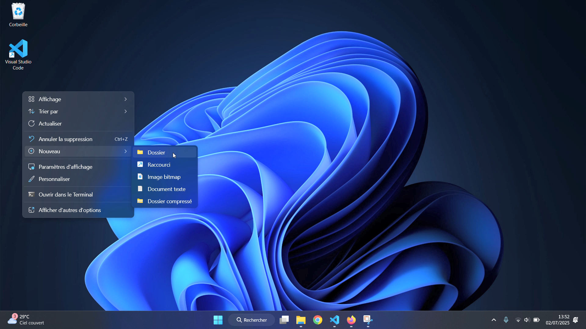
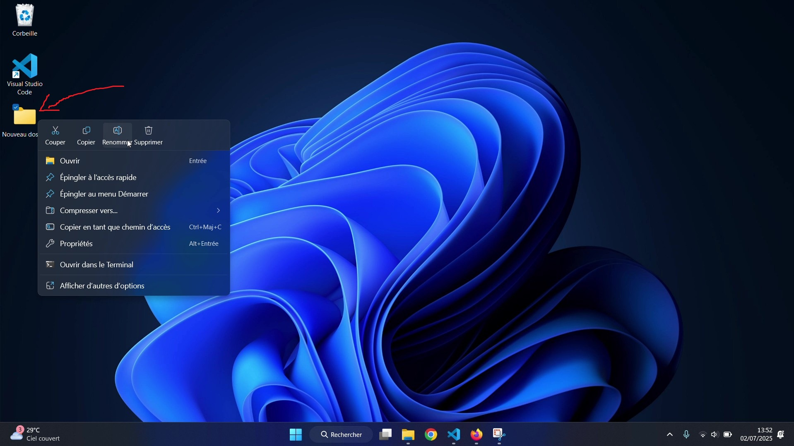
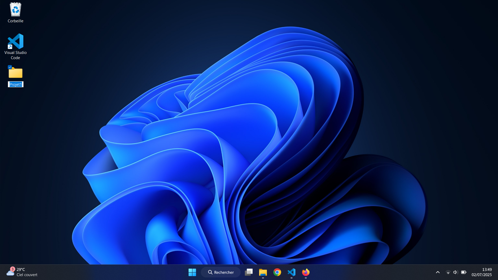
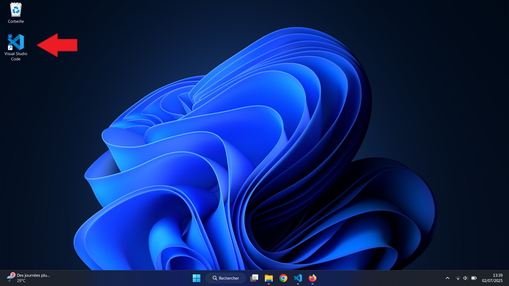
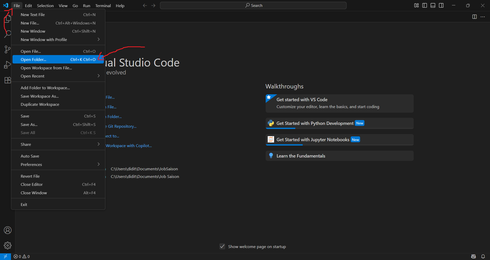
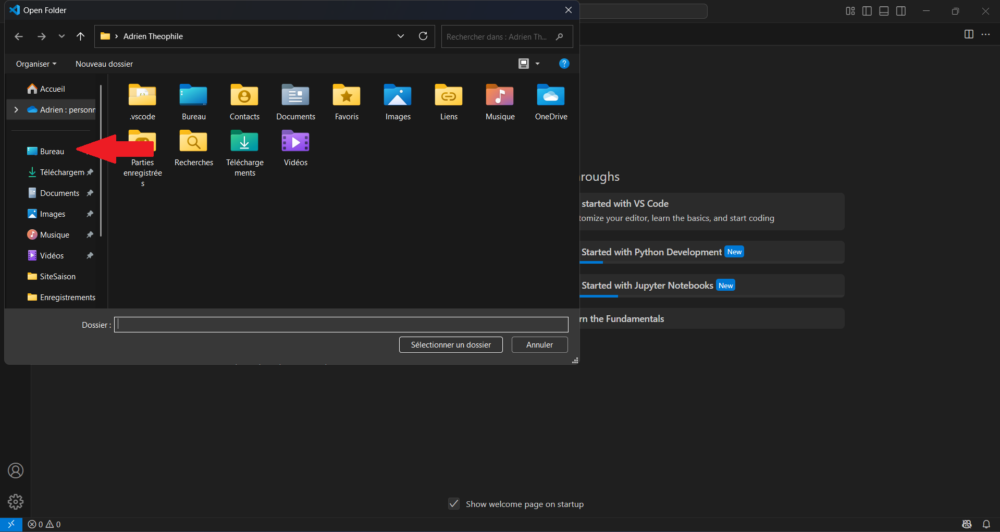
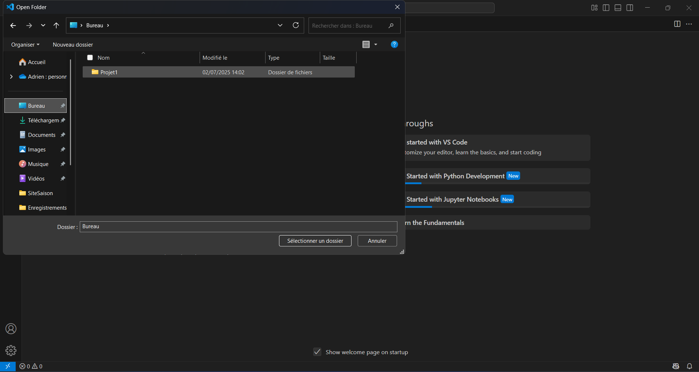
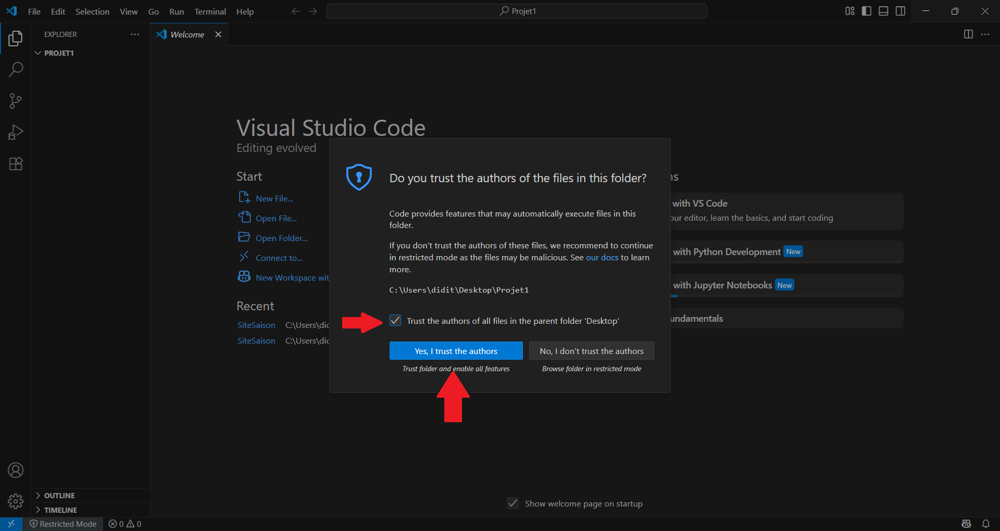
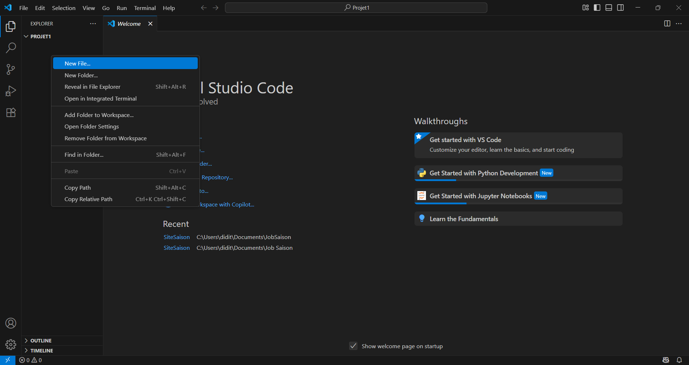

📁 1. Créer un dossier depuis le bureau
Fais un clic droit sur le bureau puis choisis Nouveau > Dossier :
📂 2. Dossier créé
✏️ 3. Renommer le dossier
Fais un clic droit sur le dossier puis choisis Renommer :
 🚀 4. Lancer VSCode
📂 5. Ouvrir le dossier
Dans VSCode, fais un clic droit sur la zone de travail puis choisis Ouvrir un dossier :
📌 6. Sélectionner le dossier
 🔒 7. Faire confiance au dossier
Si cette fenêtre apparaît, coche la case et clique sur “Oui”.
📄 8. Créer un nouveau fichier
Fais un clic droit dans l’explorateur de fichiers (à gauche) puis choisis Nouveau fichier :
